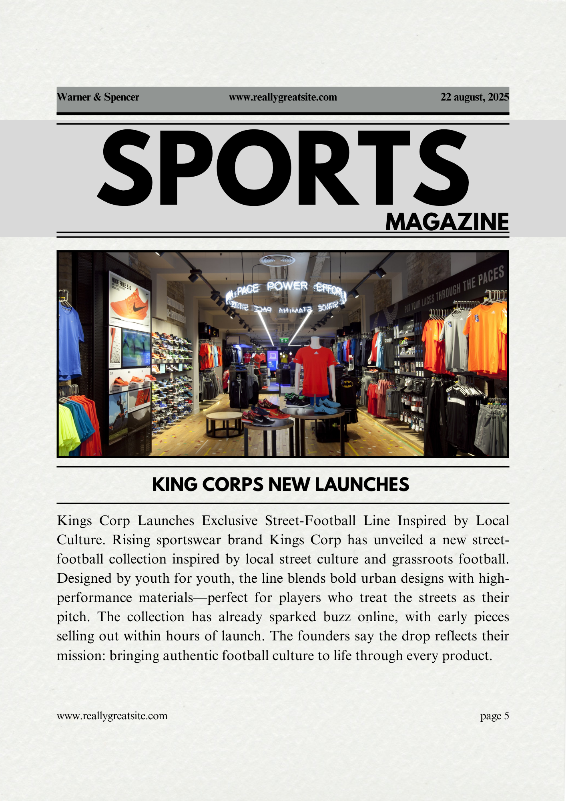
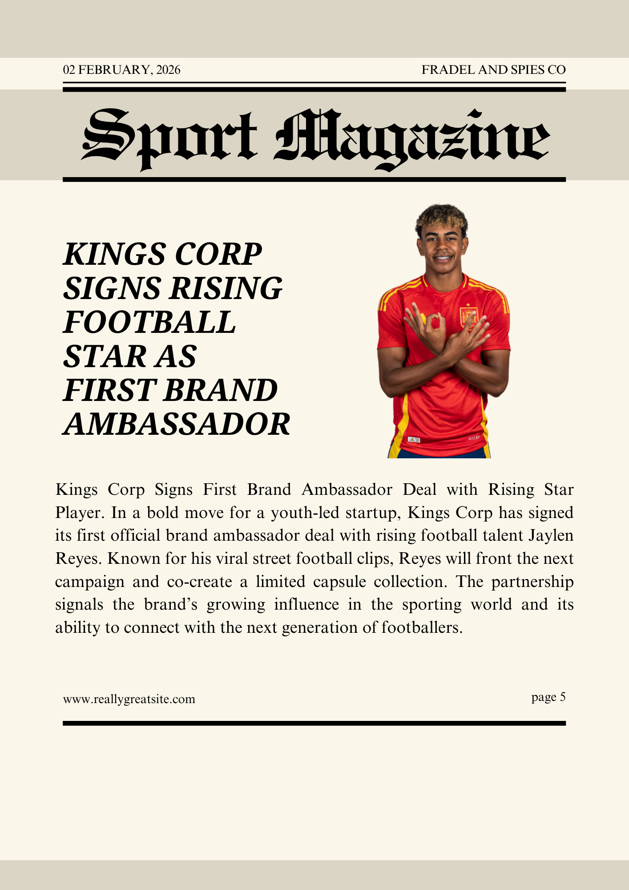
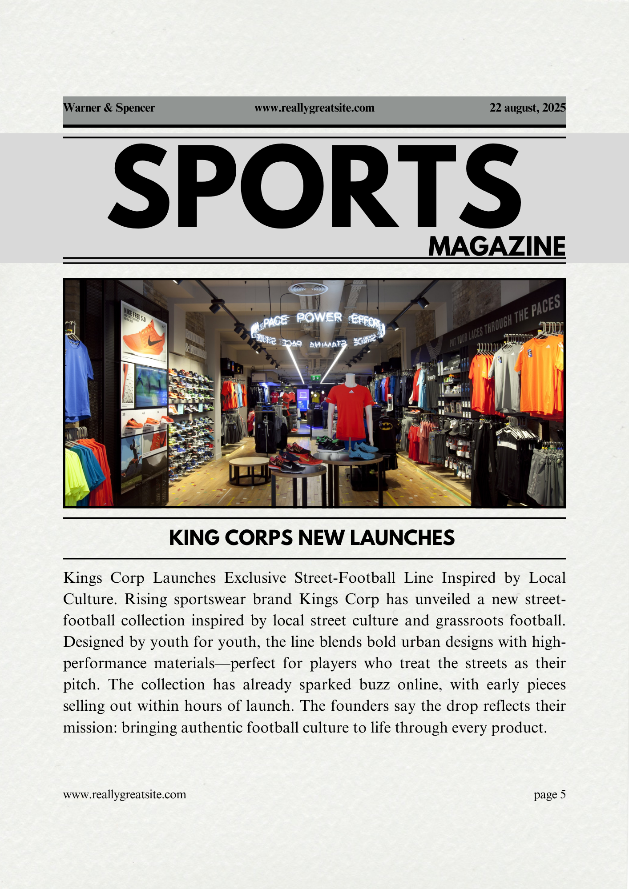
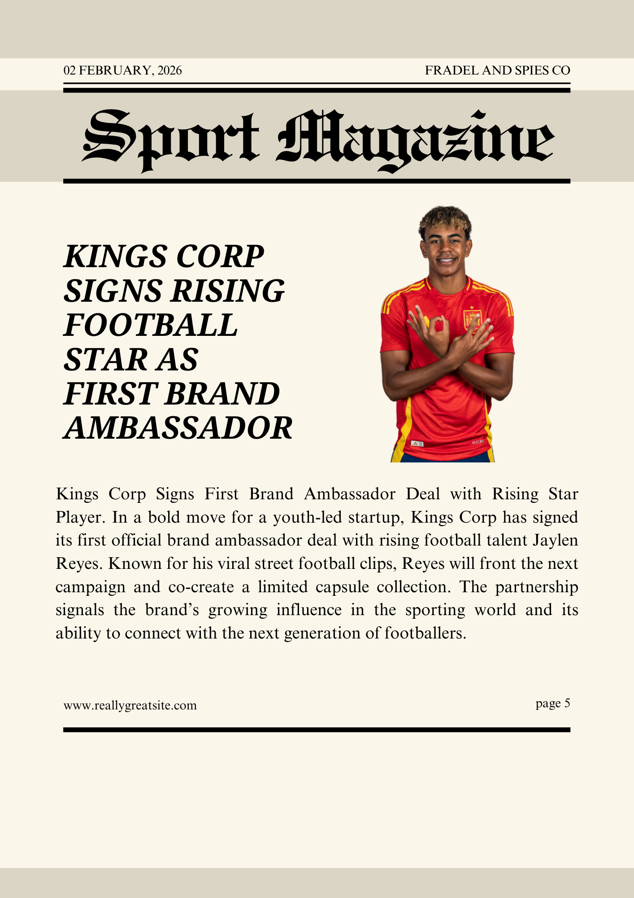

Kings Corp was born out of our shared passion for football. As football lovers ourselves — Lashira, Eldrick, Shengkai, and Gad — we noticed how hard it was for people our age to find authentic, high-quality football merchandise without breaking the bank or worrying about fakes. Whether it was jerseys, boots, or fan gear, we constantly struggled to find trusted stores that catered to the younger generation with style, price, and reliability. That frustration turned into inspiration — and that's when Kings Corp was created. What started as just four friends with a dream and a small online shop has now grown into a brand that connects real fans with real gear. We're proud to make it easier for others to wear what they love and represent the sport that brings us all together.
At Kings Corp, we offer a wide range of football essentials — from official jerseys and boots to cleats, training gear, and more. Whether you’re a casual fan or a serious player, we’ve got the gear to match your passion for the game.


 


